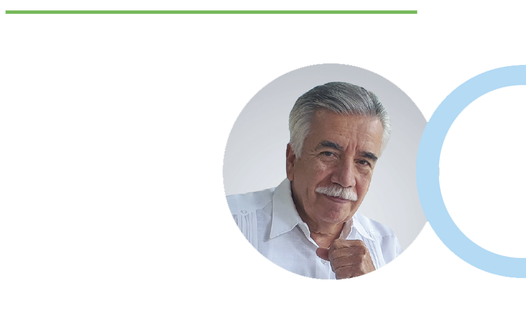

La ruta cuesta arriba hacia la especialidad médica
La medicina es una ciencia en constante evolución; cada día, producto de la investigación y de nuevos descubrimientos, hay algo nuevo que aprender. Por ello es fundamental que quienes la ejercemos necesitemos actualizar nuestros conocimientos y certificarlos para nuestra CERTEZA, así como para garantizar una atención de excelencia.
Tanto Iinstituciones educativas, así como de salud de nuestro país desarrollan programas de educación continua, con diplomados, cursos, conferencias, congresos, simposios, entre otros, para así garantizar una permanente actualización en cuanto a los avances científicos y tecnológicos médicos.
En nuestra formación, el objetivo de la especialidad es dotarnos de capacidades para realizar los procedimientos diagnósticos y terapéuticos de la especialidad sobre la base de un suficiente conocimiento científico, previo a haber cursado la licenciatura en medicina con 5 años de estudio y un año de servicio social (concluidos en escuelas y facultades públicas y particulares,. reconocidas por el Consejo Mexicano para la Acreditación de la Educación Médica por su excelencia educativa) y aprobar el Examen Nacional de Aspirantes a Residencias Médicas (ENARM), que exige el Programa Nacional de Residencias Médicas, regulado por la Comisión Interinstitucional para la Formación de Recursos Humanos para la Salud, que está integrada por las instituciones educativas y de salud que intervienen en la formación de especialistas en medicina, entre ellas, el CONACEM.
Para obtener el título de especialista, el estudiante debe completar los años del curso de especialización médica, aprobar las evaluaciones, cumplir con el servicio social, presentar un trabajo de investigación concluido y aprobar el examen final universitario, así como optar por el examen del Consejo de su Especialidad, para obtener la certificación, a efectos de revisar el entrenamiento, habilidades, destrezas y calificación de la pericia que se requiere para la certificación y recertificación de la misma, en las diferentes especialidades de la medicina reconocidas por este Comité y en las instituciones de salud oficialmente reconocidas ante las autoridades correspondientes, como lo establece la Ley General de Salud.
La educación médica continua, junto con los principios éticos constituyen los pilares del profesionalismo, característica muy reconocida a en los especialistas mexicanos que mantienen un nivel competitivo a nivel internacionalinternacionalmente y cuentan con la capacidad para su desempeño en las instituciones con mayor prestigio en el planeta. La preparación de especialistas en México es de gran calidad, comparable a los mejores del mundo. Excelentes especialistas se han formado en los Institutos Nacionales de Salud, o en instituciones del interior del país y en el extranjero a lo largo de la historia de la medicina mexicana.
Un médico especialista no se puede improvisar
de la noche a la mañana; como vemos, es todo un camino
cuesta arriba el que debe recorrer para alcanzar
la preciada cima y satisfacer así, su interés por un mayor
y mejor conocimiento para fortalecer
el compromiso social con sus pacientes,
con sus instituciones y con su país.
Dr. José Ignacio Santos
